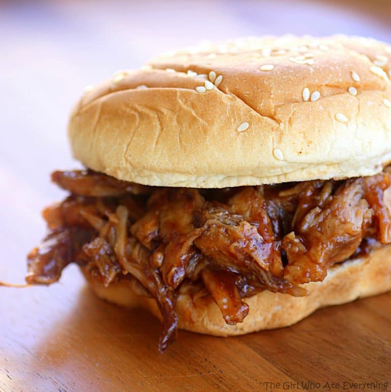

Root Beer Pulled Pork Sandwich

Pulled Pork Sandwich
These Root Beer Pulled Pork Sandwiches are made from only 3 ingredients and are great for feeding a crowd. This pork dinner can be made in the crockpot, slow cooker, or Instant Pot.
Ingredients
- 1 (2 pound) pork shoulder or butt
- 1 (12 ounce) can of root beer
- 1 (18 ounce) bottle of barbecue sauce
- 8 hamburger buns
Steps
- Place the pork in a slow cooker and pour the can of root beer over the meat. Cover and cook on low for 6 hours or until pork shreds easily with a fork.
- After pork has cooked, drain and discard the root beer. Shred the pork and place it back in the slow cooker. Pour the barbecue sauce over the pork and stir to combine. Serve immediately or keep warm in slow cooker until ready to serve. Serve on hamburger buns.
- For the Instant Pot: Cook on high pressure for about 35 minutes. Let pressure release and continue to step two.